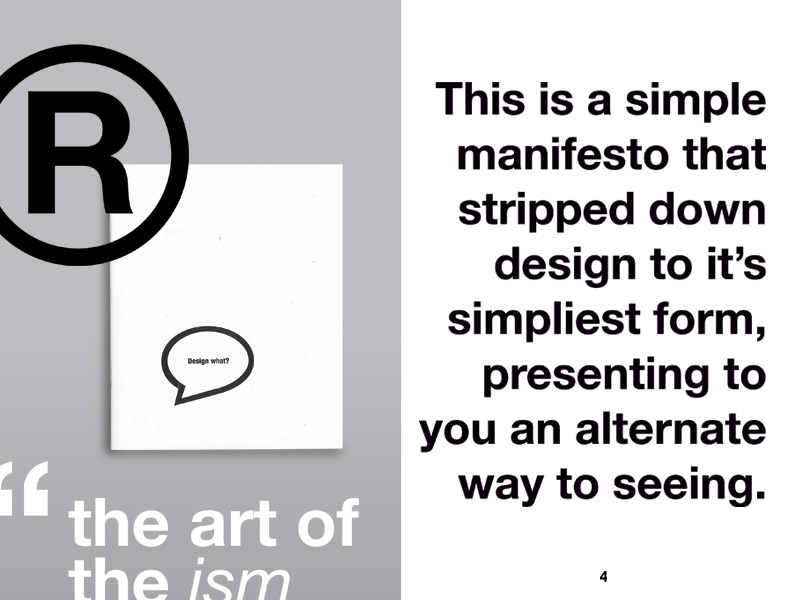
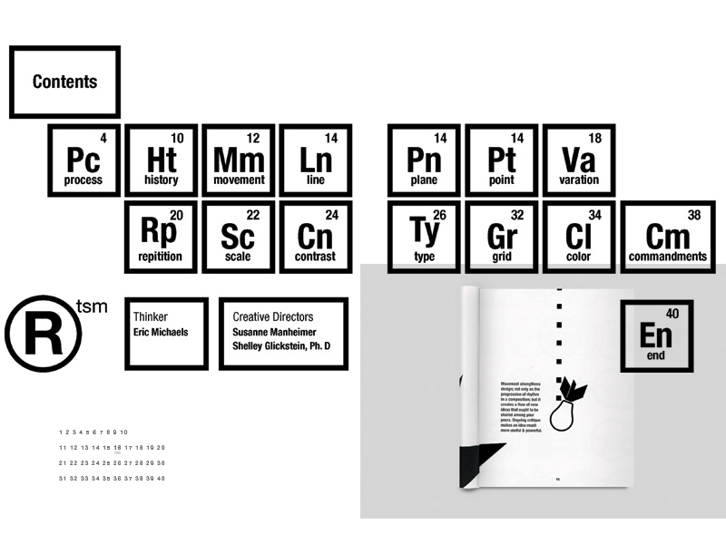
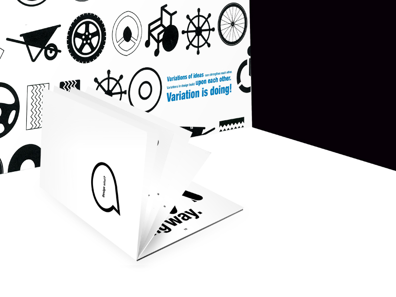
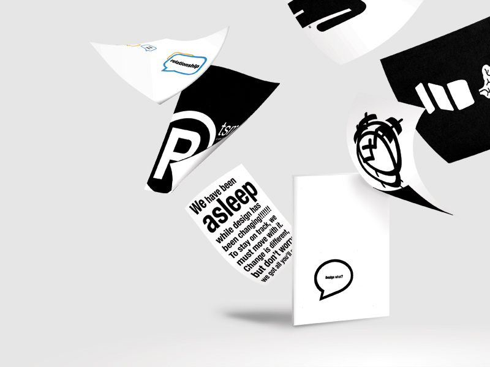

<section class="designWork-sections m-scene"><div class="flex flex--center scene_element scene_element--fadein"><div class="col-1b"><h4>Design</h4></div><div class="col-1c"><h2 class="kerning">Design What?</h2><h3 class="subTitle">A Graphic Design Manual</h3><p class="smaller workDate">RTSM: The Movement</p></div><div class="col-description"><p class="smaller">Design What? is a publication that was conceived as part of a thesis project<br/>demonstrating a focused approach to information, aesthetics and audience.<br/>The goal of this project was to create a Graphic Design instruction manual<br/>that both an experienced designer, or a curious patron could understand<br/>easily in addition to learn valuable information and implementation. There<br/>were specific requirements in the typographic and stylization which the<br/>client requested that as the solo designer found intriguing, worthwhile, and challenging.</p><p class="smaller">Publication is composed of four-color process prints that are staple bound.<br/>Dimensions: 4.5" x 6.5"</p><a href="designWork-KingLyre.html" class="portfolio-prevBtn"><</a></div><div id="center2" class="designGallery pushUp-designGallery"><ul class="rslides"><li></li><li></li><li></li><li></li></ul></div></div></section>